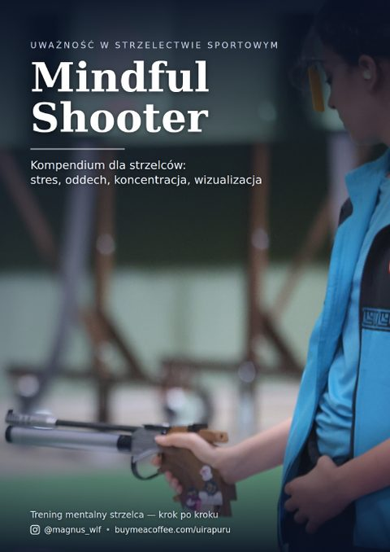

Mindful Shooter
Uważność w strzelectwie sportowym · 52 stron · PDF
Co dzieje się w głowie między decyzją a strzałem i dlaczego trening uwagi poprawia wyniki bardziej niż kolejny tysiąc naboi.
O czym jest
Strzelectwo sportowe rozstrzyga się na poziomie uwagi, nie siły. Zawodnik, który potrafi wrócić uwagą do przyrządów po nieudanym strzale, strzela lepszą serię niż ten, który się na tym strzale zatrzymał.
Kompendium opisuje techniki uważności przełożone na konkretne czynności na osi: oddech, rutynę przedstrzałową, pracę z myślami po błędzie.
Skąd się wzięło
Opracowanie powstało na podstawie kursu internetowego prowadzonego przez psychologa sportu. Nie jest to podręcznik techniki strzeleckiej.
Dla kogo
Dla zawodników i instruktorów, którzy mają opanowaną technikę, a wyniki wahają się z dnia na dzień.